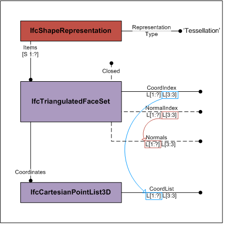
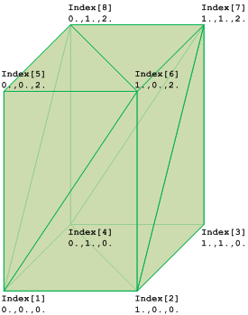

8.8.3.38 IfcTriangulatedFaceSet
| Ensemble de faces triangulées |
| tesselliertes Element aus Dreiecksflächen |
The IfcTriangulatedFaceSet is a tessellated face set
with all faces being bound by triangles. The faces are
constructed by implicit polylines defined by three Cartesian
points. The coordinates of each point are provided by an
index into an ordered list of Cartesian points provided by
the two-dimensional list CoordIndex, where
- the first dimension of the two-dimensional list addresses
the list of triangular faces;
- the second dimension of the two-dimensional list provides
exactly three indices into the IfcCartesianPointList
referenced by Coordinates defined at the supertype
IfcTessellatedFaceSet. Each index points to a
Cartesian point being a vertex of the triangle.
Optional the normals at each vertex, being perpendicular to
the face for that triangle, can be provided by the
two-dimensional list NormalIndex, where
- the first dimension of the two-dimensional list addresses
the corresponding list of triangular faces;
- the second dimension of the two-dimensional list provides
exactly three indices into the IfcDirectionList
referenced by Normals defined at the supertype
IfcTessellatedFaceSet. Each index, corresponding to
the index of vertices, points to a direction being the
normal at this vertex of the triangle.
Figure 309 shows the use of IfcTriangulatedFaceSet without annotation.
The diagram of the IfcTriangulatedFaceSet
represents the indices and the ordered list into which the indices point.
The index starts with 1 (indexed as 1 to N), if the
greatest index in CoordIndex in N, then the
IfcCartesianPointList shall have N lists of 3:3 coordinates.
Figure 310 shows an IfcTriangulatedFaceSet represented by
CoordIndex: ((1,6,5), (1,2,6), (6,2,7), (7,2,3),
(7,8,6), (6,8,5), (5,8,1), (1,8,4), (4,2,1), (2,4,3),
(4,8,7), (7,3,4))
IfcCartesianPointList: ((0.,0.,0.), (1.,0.,0.),
(1.,1.,0.), (0.,1.,0.), (0.,0.,2.), (1.,0.,2.), (1.,1.,2.),
(0.,1.,2.))
|

|

|
|
Figure 309 — Triangulated face set
|
Figure 310 — Triangulated face set geometry
|
NOTE The definition of IfcTriangulatedFaceSet
is based on the indexedFaceSet, and
indexedTriangleSet defined in ISO/IEC
19775-1
HISTORY New entity in IFC4.
XSD Specification:
<xs:element name="IfcTriangulatedFaceSet" type="ifc:IfcTriangulatedFaceSet" substitutionGroup="ifc:IfcTessellatedFaceSet" nillable="true"/>
<xs:complexType name="IfcTriangulatedFaceSet">
<xs:complexContent>
<xs:extension base="ifc:IfcTessellatedFaceSet">
<xs:attribute name="CoordIndex" use="optional">
<xs:simpleType>
<xs:restriction>
<xs:simpleType>
<xs:list itemType="xs:long"/>
</xs:simpleType>
<xs:minLength value="3"/>
</xs:restriction>
</xs:simpleType>
</xs:attribute>
<xs:attribute name="NormalIndex" use="optional">
<xs:simpleType>
<xs:restriction>
<xs:simpleType>
<xs:list itemType="xs:long"/>
</xs:simpleType>
<xs:minLength value="3"/>
</xs:restriction>
</xs:simpleType>
</xs:attribute>
</xs:extension>
</xs:complexContent>
</xs:complexType>
EXPRESS Specification:
|
ENTITY IfcTriangulatedFaceSet
|
|
|
| CoordIndex | : | LIST [1:?] OF LIST [3:3] OF INTEGER; |
| NormalIndex | : | OPTIONAL LIST [1:?] OF LIST [3:3] OF INTEGER; |
|
|
|
| NumberOfTriangles | : | INTEGER := SIZEOF(CoordIndex); |
|
 EXPRESS-G diagram
EXPRESS-G diagram
Attribute Definitions:
| CoordIndex | : |
Two-dimensional list, where the first dimension represents the triangles (from 1 to N) and the second dimension the indices to
three points defining the vertices (from 1 to 3).
NOTE The coordinates of the vertices are provided by the indexed list of SELF\IfcTessellatedFaceSet.Coordinates.CoordList.
|
| NormalIndex | : |
Two-dimensional list, where the first dimension represents the triangle (from 1 to N) and the second dimension the indices to
three normals (from 1 to 3) corresponding to the vertices.
The directions of the normals are provided by the indexed list of SELF\IfcTessellatedFaceSet.Normals.DirectionList.
|
| NumberOfTriangles | : |
Derived number of triangles used for this triangulation.
|
Inheritance Graph:
|
ENTITY IfcTriangulatedFaceSet
|
|
|
| CoordIndex | : | LIST [1:?] OF LIST [3:3] OF INTEGER; |
| NormalIndex | : | OPTIONAL LIST [1:?] OF LIST [3:3] OF INTEGER; |
|
|
|
| NumberOfTriangles | : | INTEGER := SIZEOF(CoordIndex); |
|
Examples:
 Link to this page
Link to this page